Logiciel libre · Open Source · en local sur le CPU, sans GPU ni réseau
MASCHERA masque et anonymise les données personnelles
dans les documents suissesCela se fait sur ton appareil, toujours en local,
sans connexion réseau !
Tu as une lettre, un fil de courriels ou un PDF et tu veux interroger un outil d’IA à son sujet. Les noms, numéros AVS et adresses ne doivent toutefois pas partir avec.
Avant
Après
Tu transmets le texte masqué au service de ton choix. Tu recolles la réponse, et MASCHERA rétablit les valeurs réelles.
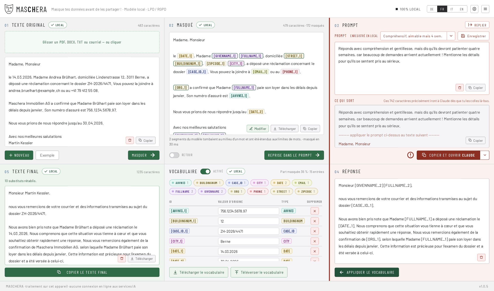
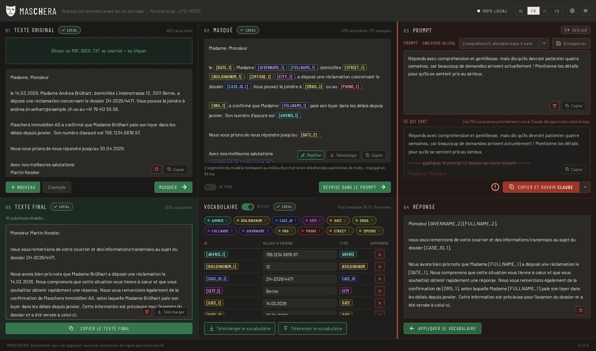
Quatre caractéristiques
Ce qui fait cet outil
Il fonctionne sur ton appareil
Toute la détection est locale. En fonctionnement, rien n’est téléchargé et rien n’est envoyé : ni polices, ni icônes, ni statistiques. Un point de terminaison qui expédierait du texte n’existe pas et n’existera pas. La sortie passe toujours par ton presse-papiers. La seule exception, c’est toi qui la choisis : « Rechercher des mises à jour » dans le menu demande une fois à GitHub le numéro de la version la plus récente.
Il n’écrit rien
Seuls tes propres réglages sont enregistrés, c’est-à-dire les règles, modèles de texte et préférences. Eux aussi ne le sont que sur ordre explicite. Aucun contenu de document, aucun dictionnaire, aucun journal.
Réversible, et c’est le but
Tu masques, tu interroges, tu recolles la réponse : MASCHERA rétablit les valeurs réelles. C’est pourquoi on parle de pseudonymisation et non d’anonymisation. Tant que le dictionnaire existe, l’opération est réversible et les données restent des données personnelles au sens de la nLPD.
Conçu pour les documents suisses
Sont reconnus le numéro AVS, l’IDE, l’IBAN, la référence QR, les identificateurs de bâtiment et de logement, la catégorie de permis, la plaque de contrôle et le numéro RCC, chacun avec sa somme de contrôle.
45 types de données au total. Quatre langues : allemand, français, italien et anglais.
Le déroulement
Cinq étapes
Ouvrir ou glisser un document, ou coller du texte
Formats lus : .pdf, .docx, .eml, .msg (Outlook), .mbox, .txt, .md, .csv, .json. Ou glisser directement depuis la messagerie.
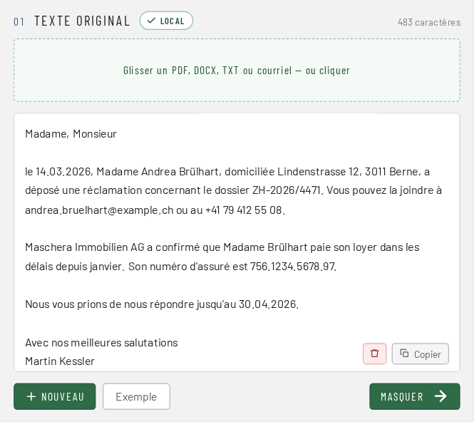
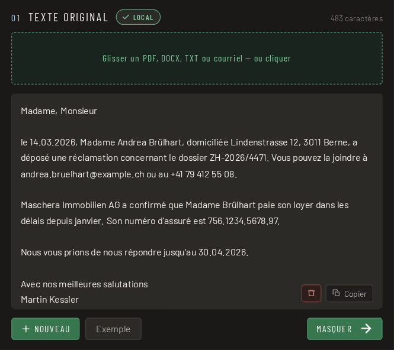
Masquer
Chaque occurrence est affichée en couleur, avec son origine : somme de contrôle, motif ou modèle.
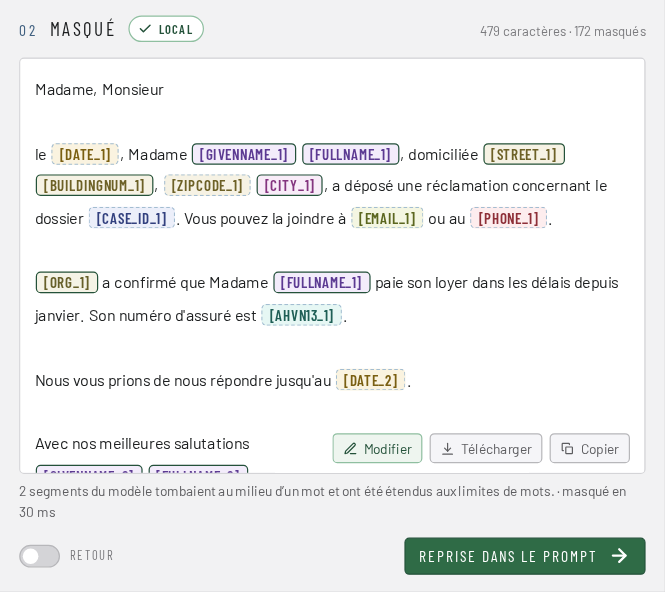
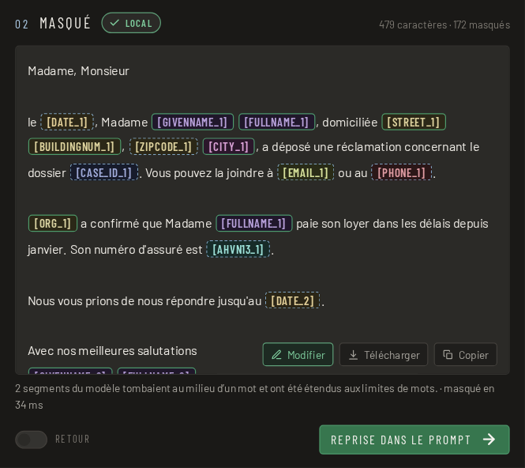
Vérifier
Tu vois ce qui a été remplacé, avant que le texte n’aille où que ce soit.
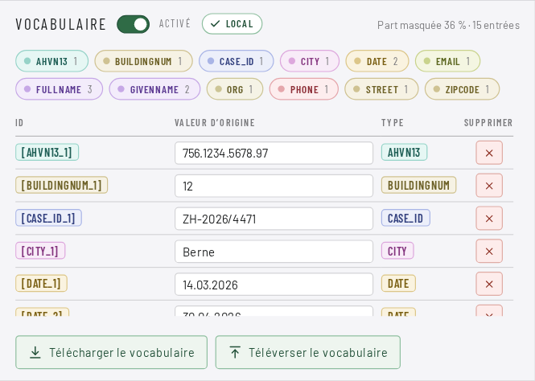
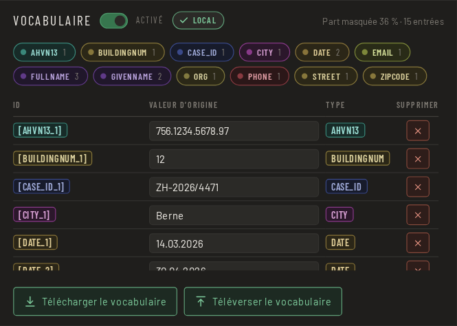
Copier et coller
Dans le service de ton choix, à la main. L’outil n’envoie rien de lui-même.
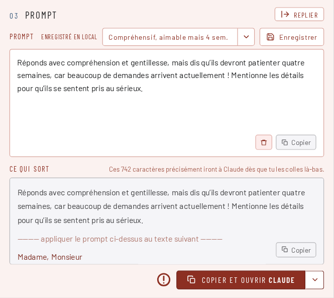
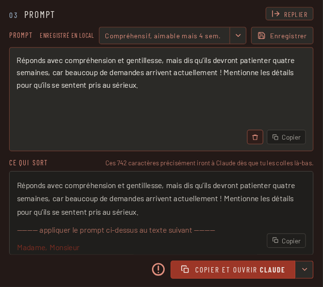
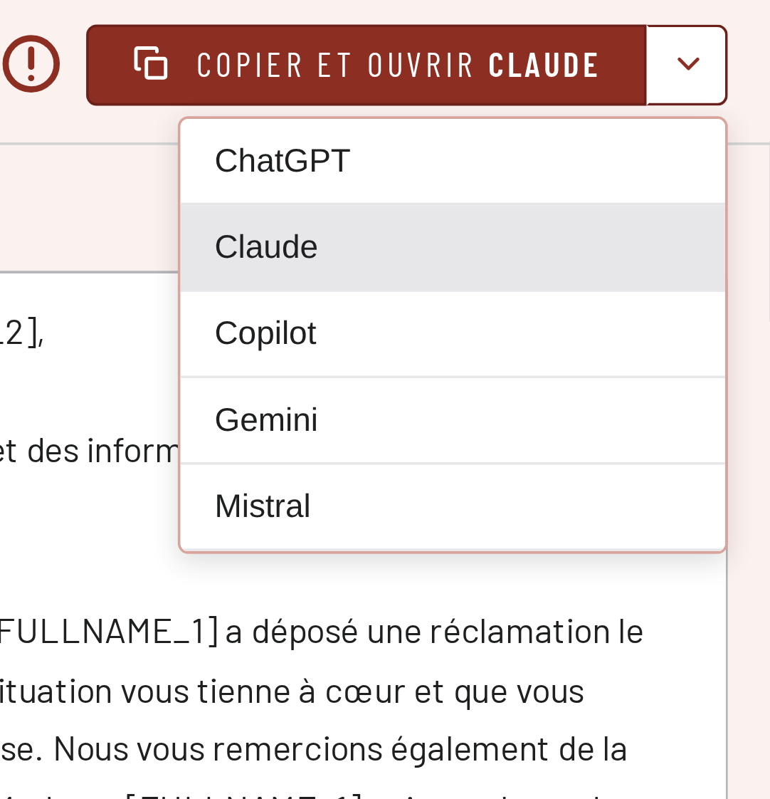
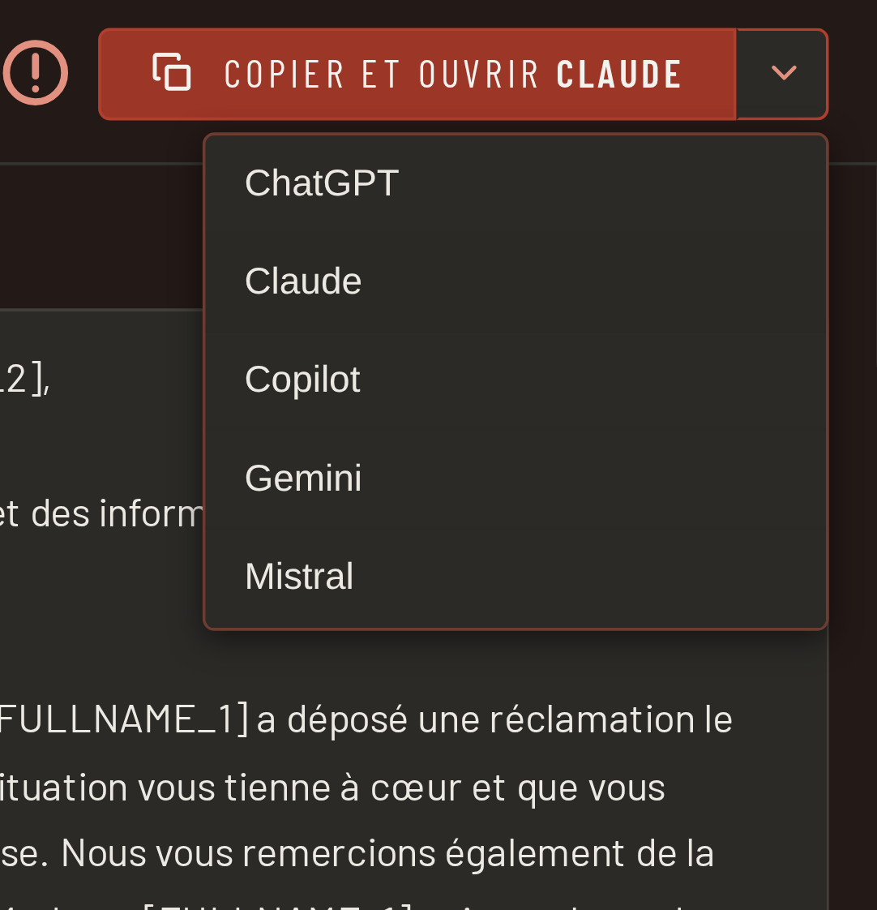
Recoller la réponse
Les valeurs réelles reviennent.
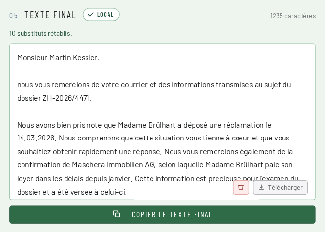
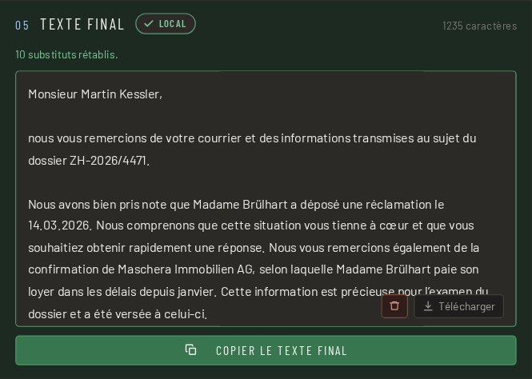
Un résultat vide n’est pas un feu vert. Un PDF numérisé sans couche de texte produit une erreur motivée, et non « aucune donnée personnelle trouvée ». Un outil qui rassure dans ce cas est plus dangereux qu’un outil qui se tait.
Trois niveaux, pas seulement « une IA »
| Niveau | Ce qu’il fait |
|---|---|
| 1 · Sommes de contrôle | Numéro AVS, IDE, IBAN, référence QR, carte de crédit, GLN. Somme valide → masquer, même si le modèle se tait. Somme invalide → écarter, même s’il se déclenche. |
| 2 · Motifs avec ancre de contexte | Numéro de téléphone, code postal, plaque de contrôle, catégorie de permis, numéro de dossier et d’autres. Ils sont reconnus grâce à des mots d’ancrage en quatre langues et n’ont pas la priorité sur le modèle. S’y ajoutent tes propres règles : des mots et des motifs que tu définis toi-même. Elles fonctionnent comme les motifs intégrés. Par exemple un n° de cas interne ou un n° de dossier interne. |
| 3 · Modèle de langue | Noms, adresses, professions, organisations et dates, donc tout ce qui n’a pas de motif. |
Le modèle pèse 1,2 Go et a été entraîné sur des données synthétiques. Il n’a jamais vu un document réel. Informations techniques sur le modèle.
Trois choses qui facilitent le quotidien
Conçu pour le travail de tous les jours
S’adapte à la fenêtre et attend en arrière-plan
Si la fenêtre est étroite, environ la moitié de l’écran ou sur un petit portable, MASCHERA place les six zones les unes sous les autres, dans l’ordre du travail : original, masqué, vocabulaire, prompt, réponse, texte final. Sous Windows et Linux, le X ne ferme pas la fenêtre : MASCHERA se range en icône près de l’horloge. Le modèle reste chargé, et au prochain document la fenêtre revient en un clic, sans attente.
Sous GNOME, l’icône n’apparaît qu’avec l’extension « AppIndicator ». Sans elle, le X ferme comme d’habitude.
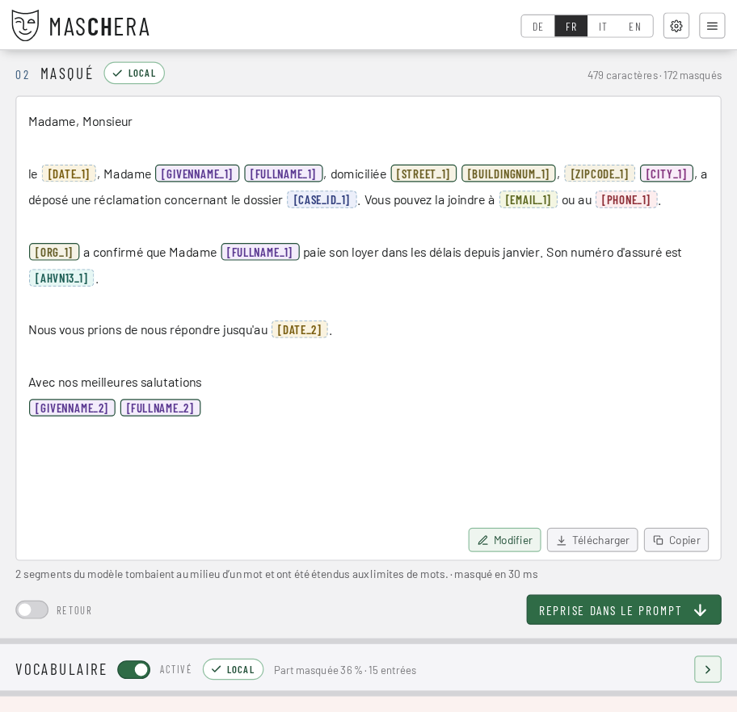
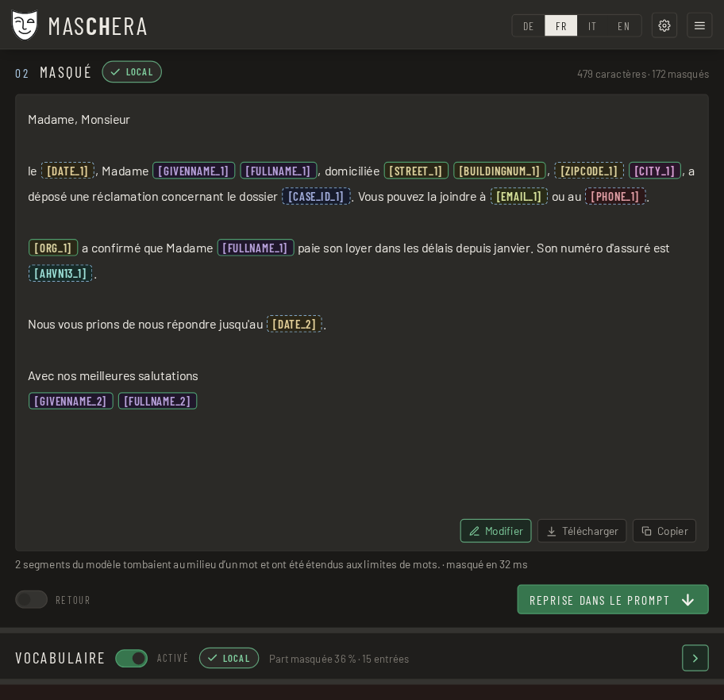
Trop masqué ? Retour en un clic
Dans le doute, MASCHERA masque plutôt un mot de trop qu’un mot de moins. Dans un long document, un nom d’entreprise ou un lieu que tu veux garder peut ainsi être remplacé. Dans le texte : un clic droit sur un marqueur montre la valeur d’origine et sa provenance ; tu y retires le masque ou choisis une autre catégorie. Dans le vocabulaire : chaque ligne a un × rouge. Un clic retire le marqueur dans tout le document : si [ORG_1] figure cinq fois dans le texte, le nom de l’entreprise réapparaît partout.
L’inverse fonctionne aussi : sélectionner un mot, choisir une catégorie d’un clic droit, et il est masqué partout. Ce qui doit toujours rester en clair, par exemple les localités, se règle une fois dans les paramètres.
Glisser-déposer, même des e-mails
PDF, Word (.docx), messages Outlook (.msg), e-mails (.eml), boîtes entières (.mbox) et fichiers texte se glissent directement sur la fenêtre. MASCHERA les lit et affiche le texte ; le masquage n’a lieu qu’à ton clic. Depuis le logiciel de messagerie, c’est souvent direct : glisser un message depuis Thunderbird ou Outlook sous Windows, c’est tout. Apple Mail ne fournit pas de fichier en glissant : glisse d’abord le message sur le bureau, puis dans la fenêtre. MASCHERA te le dit aussi.
Un PDF scanné sans couche de texte donne un message clair, pas « rien trouvé ».
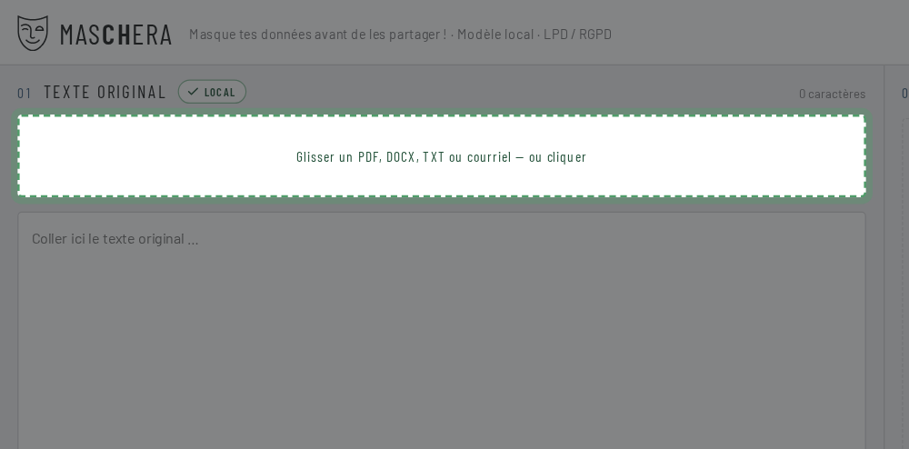
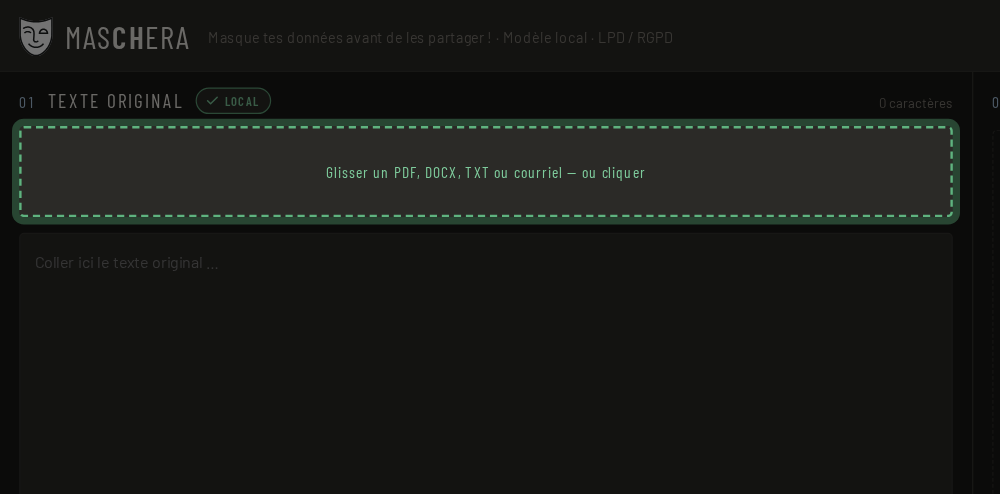
La section la plus importante
MASCHERA t’enlève le travail, pas la responsabilité.
Aucun outil ne trouve toutes les données personnelles. Relis le texte masqué avant de le transmettre. C’est pour cela que MASCHERA affiche chaque occurrence en couleur et avec son origine.
Ce que veut dire « origine »
Chaque occurrence indique d’où elle vient : d’un numéro vérifié, d’un motif avec contexte, ou du modèle de langue. Un numéro AVS dont la somme de contrôle est valide est sûrement bien reconnu ; une supposition du modèle mérite un second regard.
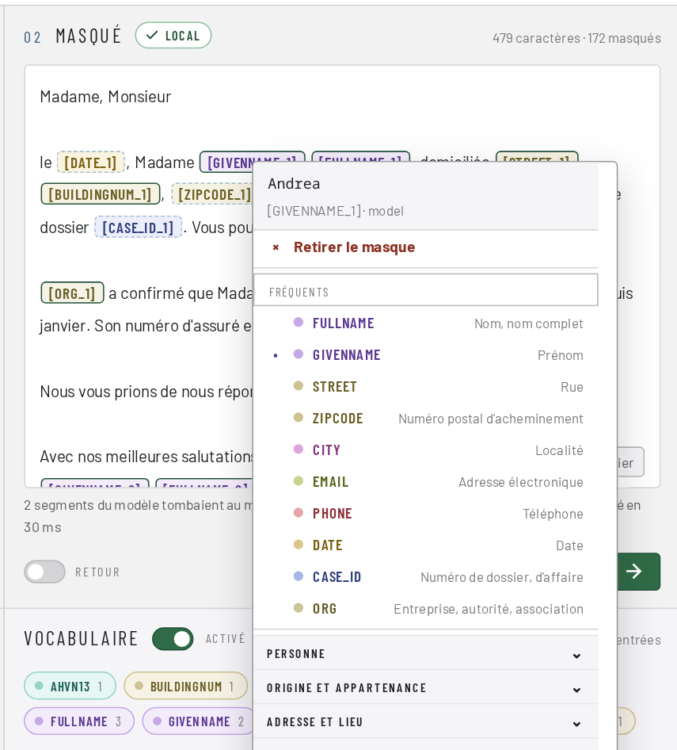
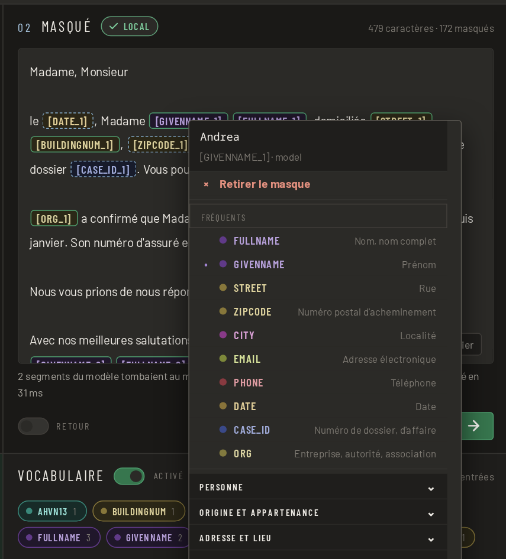
Un clic droit sur une occurrence te permet de modifier le marquage : tu choisis un autre type de données ou tu retires le masque.
Ce que tu peux faire s’il manque quelque chose
Cinq possibilités, toutes présentes dans l’application.
| Corriger à la main | Le texte masqué est modifiable. Les marqueurs comme [FULLNAME_1] restent en place et seront reconvertis à la fin. |
| Règles personnelles | Tes propres mots et motifs, masqués en plus. Un nom de projet, une abréviation interne, un surnom. |
| Types en clair | Tu peux laisser durablement certains types en clair. Ils sont reconnus, mais pas remplacés. Qui veut garder les localités le règle une fois pour toutes. |
| Reconvertir | Coller la réponse du service, et les valeurs réelles reviennent. |
| Anonymiser définitivement | Masquer sans dictionnaire. L’opération n’est alors plus réversible, et l’application te prévient à l’avance. |
MASCHERA sait faire les deux : réversible pour travailler avec un service d’IA, irréversible pour un texte qui quitte la maison tel quel.
Télécharger
Quel fichier choisir ?
Pas de formulaire d’inscription, pas d’adresse courriel demandée, pas d’infolettre. Le fichier est là, on le télécharge, c’est tout.
Linux
AppImage : un seul fichier exécutable, le modèle est inclus. Télécharger, rendre exécutable et lancer. Rien n’est installé.
Flatpak : Le modèle (1,3 Go) est téléchargé depuis Hugging Face au premier démarrage de l’application.
Flatpak0,3 GBWindows
Installateur pour Windows 11, 64 bits. S’installe sans droits d’administrateur, le modèle est inclus.
Windows1,4 GBServeur
Docker, pour un fonctionnement en tant que service. L’interface s’ouvre dans le navigateur. Le modèle est inclus. Le serveur ne conserve rien : aucun document, aucun dictionnaire, aucun journal. Après la réponse, tout est oublié.
Docker4,2 GBmacOS
Image disque pour les Mac à puce Apple (M1 ou plus récent). Le modèle est inclus. L’app n’est pas signée : après l’avoir glissée dans « Applications », saisis une fois dans le « Terminal » xattr -dr com.apple.quarantine /Applications/MASCHERA.app, sinon elle ne s’ouvre pas.
Tous les fichiers se trouvent dans les publications sur GitHub, avec SHA256SUMS pour la vérification.
À propos du modèle
Le modèle pèse 1,2 Go. L’AppImage, l’installateur Windows et l’image macOS l’embarquent. Le Flatpak le récupère une fois au premier démarrage. Il vient d’une source nommée, est vérifié par une somme de contrôle et n’est chargé qu’après ton accord. Sans wifi sous la main, tu refuses et tu le récupères une autre fois. Ensuite, tout fonctionne hors ligne de la même façon.
AppImage ou Flatpak ?
AppImage est un seul fichier : télécharger, rendre exécutable et lancer. Rien n’est installé. Flatpak s’intègre à la gestion de paquets et se met à jour avec elle.
Les deux embarquent leurs propres bibliothèques et sont donc indépendants de la version de ta distribution. Sur les systèmes Arch, Flatpak fonctionne parfaitement ; c’est pourquoi il n’y a pas de paquet Arch séparé.
Questions fréquentes
Questions et réponses
Comment masquer ou anonymiser les données personnelles d’un document avant d’interroger ChatGPT ou Claude ?
Ouvre le document dans MASCHERA ou colle le texte, puis clique sur « Masquer ». Les noms, numéros AVS, adresses et autres données personnelles sont remplacés par des marqueurs comme [FULLNAME_1]. Tu vérifies le résultat, tu le copies dans le service de ton choix et tu recolles la réponse : MASCHERA y remet les vraies valeurs.
MASCHERA a-t-il besoin d’une carte graphique ou d’une connexion Internet ?
Non. La détection tourne sur un CPU ordinaire, sans GPU. En fonctionnement, rien n’est téléchargé et rien n’est envoyé, sauf si tu cliques sur « Rechercher des mises à jour ». L’AppImage, l’installateur Windows et l’image macOS contiennent le modèle ; le Flatpak le télécharge une fois au premier démarrage, après ton accord.
Quels identifiants suisses MASCHERA reconnaît-il ?
Le numéro AVS, l’IDE, l’IBAN, la référence QR, les identificateurs de bâtiment et de logement (EGID/EWID), la catégorie de permis, la plaque de contrôle et le numéro RCC, chacun avec sa somme de contrôle lorsqu’elle existe. Au total, 45 types de données personnelles, en allemand, français, italien et anglais.
Est-ce une anonymisation au sens de la loi sur la protection des données ?
Non, et c’est voulu. Tant que le dictionnaire existe, l’opération est réversible ; selon la nLPD, les données restent alors des données personnelles. C’est une pseudonymisation. Pour un texte transmis définitivement, tu masques sans dictionnaire : l’opération n’est alors plus réversible.
Quels fichiers MASCHERA peut-il lire ?
PDF avec couche de texte, Word (DOCX), e-mails (EML, MSG d’Outlook, MBOX), TXT, MD, CSV et JSON. Un PDF scanné sans couche de texte produit une erreur motivée, et non « aucune donnée personnelle trouvée ».
En quoi MASCHERA diffère-t-il de Microsoft Presidio ?
Presidio est un cadre ouvert pour développeurs qui détecte et masque les données personnelles. Il connaît des identifiants de plus de vingt pays, mais aucun de Suisse ; il faudrait les ajouter soi-même. MASCHERA est une application prête à l’emploi pour les documents suisses, avec une interface pour vérifier et rétablir les valeurs.
Puis-je aussi anonymiser un document définitivement ?
Oui. Par défaut, MASCHERA masque de façon réversible : avec le dictionnaire, les vraies valeurs reviennent. Pour un texte transmis ou publié, tu masques sans dictionnaire ; l’opération n’est alors plus réversible. Vérifie quand même si des indices indirects sur une personne restent dans le texte.
| MASCHERA | Microsoft Presidio | |
|---|---|---|
| Conçu pour | Documents suisses | Textes généraux, extensible |
| Identifiants suisses | Intégrés, avec somme de contrôle | Aucun dans la liste des types pris en charge |
| Forme | Application pour Windows, macOS, Linux et Docker | Bibliothèque Python et service à intégrer dans d’autres programmes |
| Fonctionne en local | Oui | Oui |
| Licence | MIT (code source) | MIT |
État en octobre 2026, d’après la liste des types pris en charge dans la documentation de Presidio.
Où se trouve tout le reste
La technique est tenue à jour là-bas
La qualité de mesure du modèle, son entraînement, la construction du programme : tout cela se trouve là-bas et y est tenu à jour.
Code source et versions
Comment c’est construit, quelle version du programme fonctionne avec quel modèle, tous les contrôles.
Le modèle
La qualité du modèle, son entraînement, les types de données qu’il connaît.
Signaler une erreur
Ce qui n’a pas été reconnu, ce qui a été mal remplacé, ce qui manque.
Mentions légales
Responsable
| Nom | Rodolfo Semprevivo |
|---|---|
| Pays | Suisse |
| Contact | via GitHub Issues |
| Web | www.maschera.ch |
But
MASCHERA est un outil de masquage local de données personnelles dans des documents suisses. Il est mis à disposition en tant que logiciel ouvert.
Ce site
Ce site est hébergé par Hostpoint AG en Suisse. Lors de la consultation, Hostpoint traite les données techniquement nécessaires, comme l’adresse IP, dans ses journaux de serveur ; les détails figurent dans la déclaration de confidentialité de Hostpoint. Le site lui-même ne pose aucun cookie, ne collecte aucune statistique et ne charge rien depuis des serveurs tiers. Les fichiers à télécharger se trouvent sur GitHub (GitHub, Inc., États-Unis).
L’application
MASCHERA traite tes documents exclusivement sur ton propre appareil. Aucun contenu n’est transmis à l’éditeur ou à des tiers, aucune donnée d’utilisation n’est collectée et aucun cookie n’est déposé. L’éditeur n’a de ce fait aucune connaissance des données traitées et n’en est pas responsable au sens de la LPD. La responsabilité des données t’incombe. Dès que tu colles un texte masqué dans un outil IA, les conditions de ce fournisseur s’appliquent.
Responsabilité
MASCHERA est fourni sans garantie. La reconnaissance des données personnelles est automatique et n’est pas exhaustive : elle peut omettre des indications et masque trop en cas de doute. La vérification du texte masqué avant transmission t’incombe. Toute responsabilité pour des dommages résultant de l’utilisation est exclue dans les limites légales. Les exploitants des sites liés sont responsables de leurs contenus.
Licence
Code source MIT, paquets livrés AGPL-3.0, modèle MIT. Le code source et les œuvres de tiers utilisées, avec leurs licences, se trouvent sur GitHub.